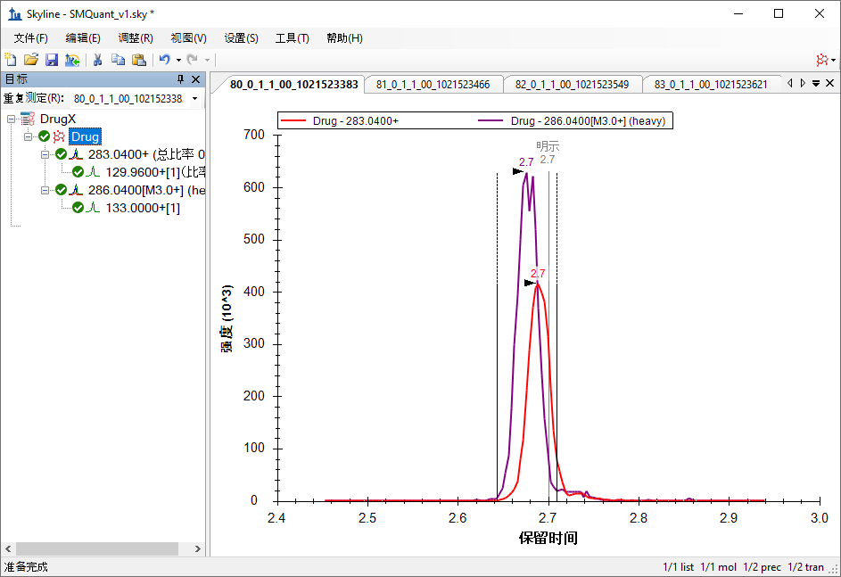
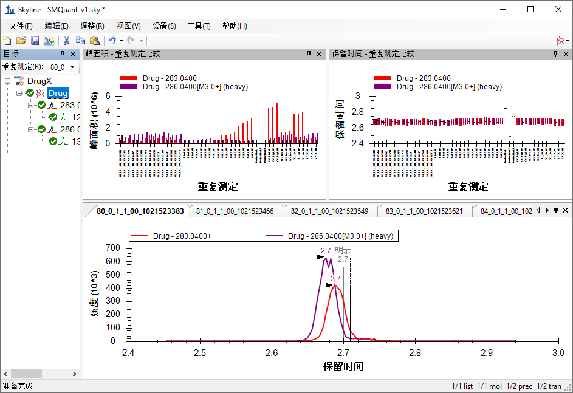
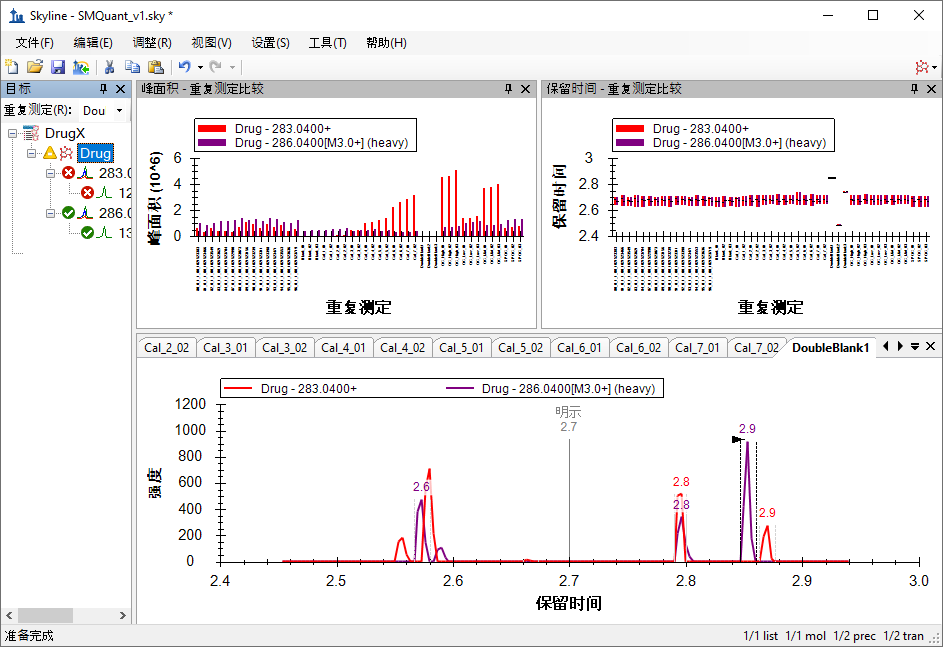
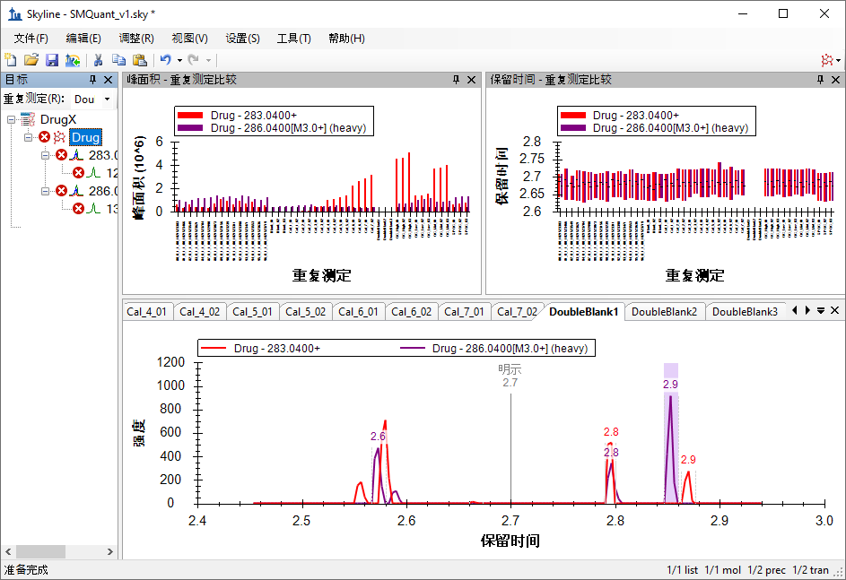
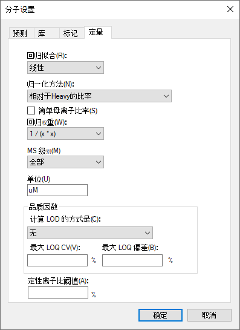
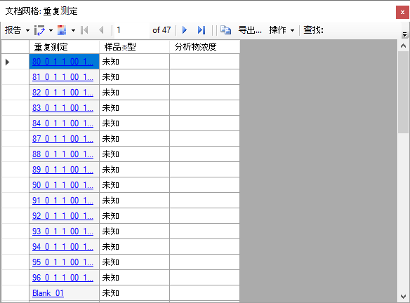
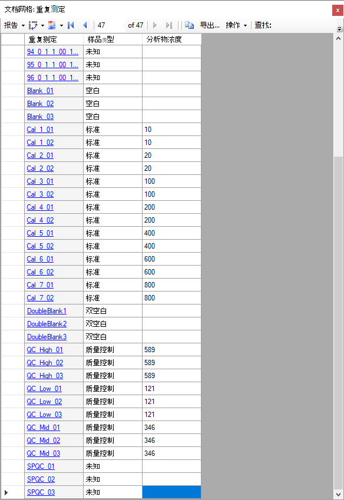
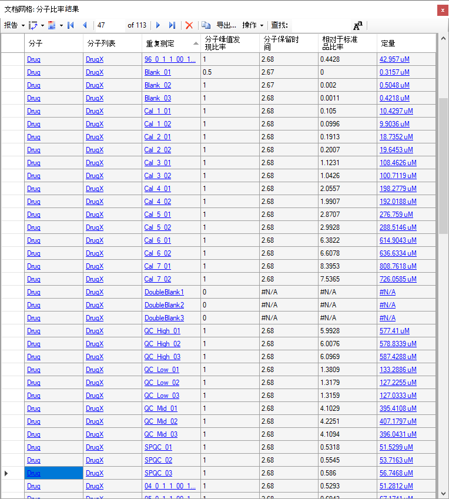

Skyline 靶向质谱环境能直观呈现导入 Skyline 的原始质谱仪数据信息。Skyline 最初为蛋白质组学应用而开发，其应用范畴现已延伸到小分子领域。本教程中探讨一个相对简单的示例，该例使用外部标准曲线和稳定同位素标记的内标，针对单个小分子使用 Skyline 进行靶向定量。
在本教程中，您将从可能已在运行的方法（例如药代动力学分析）入手，了解基于 TQ-MS 的靶向定量（本例中为血浆去蛋白）。通过分析该数据集，您将学会：
您还可以查看本教程所依据的第 16 堂 Skyline 教程网络研讨会的后半部分。
Skyline 旨在提供一个不区分质谱仪供应商且可用于靶向定量质谱研究的平台。该平台可以导入在不同仪器供应商的质谱仪上采集的原始数据， 例如 Agilent、SCIEX、Bruker、Shimadzu、Thermo-Scientific 和 Waters。通过导入不同仪器平台的数据，可极大地促进不同仪器之间的比较和多站点研究。这种方法在蛋白质组学领域已使用多年，因此在将其用于目标小分子时同样奏效。
如果您尚未观看过“Skyline 小分子目标”教程，请现在查看教程，以掌握一些有关 Skyline 如何处理小分子信息（比如化学式和加合物）的基础知识。
要开始本教程，请下载下列 ZIP 文件：
https://skyline.ms/tutorials/SmallMoleculeQuantification.zip
将文件解压到您电脑上的某个文件夹，比如：
C:\Users\bspratt\Documents
该操作将创建一个新文件夹：
C:\Users\bspratt\Documents\SmallMoleculeQuant
其中将包含本教程所需的所有文件。
如果您在开始学习本教程之前就一直在用 Skyline，最好将 Skyline 恢复为默认设置。要恢复默认设置：

该 Skyline 实例中的文档设置现已重置为默认值。
由于本教程涵盖小分子主题，您可以执行以下操作来选择分子界面：

Skyline 将在小分子模式下运行，Skyline 窗口右上角 随之显示蛋白质图标 。原始蛋白质组学菜单和控件现已隐藏，便于您专心从事小分子分析。
。原始蛋白质组学菜单和控件现已隐藏，便于您专心从事小分子分析。
本实验根据《FDA 生物分析方法学确证指南》设计而成，因此所包含的不仅仅是研究样品。此类研究所采用的常见检测板样品布局和分析顺序的完整描述现在已经发布(https://www.ncbi.nlm.nih.gov/pubmed/29039849)。简单来说，该数据集的样品按如下方式分布在 96 孔检测板中：

空白或“零”标准品仅包含内标，双空白则完全不含标准品。
标准曲线样品就是用于计算标准曲线的一系列按不同比例稀释的标准品。
QC 样品是“已知的未知”。这些是质量控制样品，在本研究中视为未知。实际上，由于这些结果已知，因此可以将其用于核实测量准确性。
血清 SPQC 即混合血清 QC (Serum Pooled QC)，合并了每一份研究样品的一小部分，会在实验开始、中间和结束时的多个时间点运行，以验证定量结合重复性在整个研究过程中是否保持稳定。
NIST SRM 1950 是来自于美国国家标准与技术研究院的混合血浆标准品，所有研究人员均可将其用作“正常”血浆代谢物测量的参考标准品。它可作为比较不同实验室的研究结果的参考信息。
按以下顺序进样：
总共进样 113 次以收集这些样品的质谱数据。
本研究只有两个研究目标：一个小分子，一个内标。内标是该小分子的同位素标记变体，与目标小分子在色谱上共洗脱。将一个不相关的小分子设置为替代标准品，也可以在不相关的小分子之间建立关系。Skyline 高分辨率代谢组学教程中介绍了替代标准品方法。
将小分子离子对列表导入 Skyline 文档的捷径是从一个空文档开始，然后使用编辑 > 插入 > 离子对列表菜单项。
首先执行以下操作：
Skyline 将显示插入离子对列表表单:

您通常要从 Excel 或其它外部来源复制和粘贴离子对列表，但本例中的离子对列表小到足以直接显示在这里：
DrugX,Drug,light,283.04,1,129.96,1,26,16,2.7
DrugX,Drug,heavy,286.04,1,133.00,1,26,16,2.7
Skyline 将显示导入离子对列表：标识列表单，从中可以告知 Skyline 每列的含义。

由于所复制的数据没有列标题，所以最初每列都设置为“忽略列”。
导入离子对列表：标识列表单现在应显示如下：

| 注：在本教程中，您仅提供这些目标的质荷比和电荷值。Skyline 可以接受更高级别的描述信息，包括化学式和重同位素标记等。提供化学式对于处理全扫描、高分辨率数据特别有用，因为它支持由 Skyline 计算同位素分布；但是，对于这样的 SRM 数据，使用质荷比和电荷便足矣。 |
要详细查看新导入的目标，请执行以下操作：
此时 Skyline 窗口将显示如下：

下一步是确保离子对的设置适合于导入质谱仪产生的原始数据。请执行下列步骤：
离子对设置表单现在应显示如下：

离子对设置表单现在应显示如下：

在离子类型字段中，值“f”表示将仅测量碎片离子的离子对。如果还想测量母离子，则可以使用“f，p”。
仪器选项卡中的默认值适用于本实验。但在您自己进行实验时，请确保最小和最大质荷比值对您实际使用的仪器是有意义的。这些设置的目的是防止您添加质谱仪实际上无法测量的目标离子对。

方法匹配耐受性是仪器选项卡中的另一项重要设置。它决定仪器方法（存储在原始数据文件中）中的质荷比值必须与 Skyline 目标列表中的质荷比值相匹配的程度。Skyline 中的默认值为 0.055，因为测试中使用的原始 SRM 文件虽然指定为小数点后一位（例如 784.3），但其中包含一些细微的舍入误差。如果从 Skyline 导出方法，可以使用更小的容差。
下一步是导入质谱仪产生的原始数据。
本实验有 113 个相关的质谱仪数据文件。在这种情况下，起初只导入少量未知样品以及所有标准曲线数据和质量控制 (QC) 数据会很有用。但是，您可能还希望从不太复杂的文档开始验证数据质量，仅导入几次分析结果即开始验证，比如从最高浓度的标准曲线开始。
在这里，您将执行以下步骤：
导入结果表单现在应显示如下：

导入结果文件表单应显示如下：

此文件应在 30 秒左右内导入，之后 Skyline 窗口将显示如下：

要利用 Skyline 摘要图查看各个目标，请执行以下操作：
此时 Skyline 窗口将显示如下：

在保留时间 - 重复测定比较窗口中，可以看到名称中含有“DoubleBlank”的重复测定中的异常值，Skyline 未选择与其它重复测定相一致的保留时间峰值。
要仔细查看其中某次进样分析的色谱图，请执行以下操作：
Skyline 其实并不会为该重复测定中药物的轻/重离子对找到一个良好的峰，因为“DoubleBlank”一词表示二者在该样品中都不存在。色谱图现在显示了 Skyline 不得不选择的色谱峰：

这应表明，DoubleBlank2 和 DoubleBlank3 在标有“明示”的 2.7 分钟附近也没有任何明确的峰，意味着该种方法明确指定了 2.7 分钟作为预期的洗脱时间。由于这些也是双空白，可以预想这些重复测定中没有任何实际的峰，因此接下来要手动调整每个双空白重复测定的积分，以在 2.7 分钟处位于低信号区域的中心。
要调整峰积分，请执行以下步骤：
峰边界将变更为这些新值，初始范围用阴影区域标记，如下所示：

对其他两个“DoubleBlank”重复测定重复执行上述步骤。
接下来设置定量标准曲线，请执行以下步骤：
分子设置表单现在应显示如下：

本实验使用线性回归拟合，对重标药物实施归一化。Skyline 提供了曲线随 x 而变化的权重选项：无、1/x 和 1/(x*x)。本教程使用“1 / (x*x)”的回归权重，这会增加较低浓度校准样品的权重。单位的设置只是为了展示结果，可以设置为对您的实验有意义的任何单位。本实验中的浓度为微摩尔每升，因此单位字段设置为“uM”。
此时还没有完成标准曲线的设置，还需要设置各种重复测定的标准样品类型和浓度。
系统将使用文档网格来检查和添加重复测定的标准品相关信息。文档网格是 Skyline 中一款非常有用的工具，它以类似于电子表格的形式，提供许多文档详细信息视图，其中许多信息可以在网格中直接编辑。在本例中，您需要提供各种重复测定的详细信息，如下所示：
文档网格应显示如下：

默认情况下，所有重复测定的样品类型值均为“未知”。对于名称以数字开头的所有重复测定，这是合乎需要的类型。除了这些操作，还应执行以下操作：
现在，选定的所有项目都具有与选定对象中的第一项相同的值。
根据需要反复执行操作（或跳至下表）：
记住，“SPCQC_”重复测定是质量控制样品（混合了每一份样品的一小部分），因此将其保留为“未知”。
您也可以手动输入标准品浓度，但复制后再粘贴到网格中要容易得多。
| Blank_01 | Blank | |
| Blank_02 | Blank | |
| Blank_03 | Blank | |
| Cal_1_01 | Standard | 10 |
| Cal_1_02 | Standard | 10 |
| Cal_2_01 | Standard | 20 |
| Cal_2_02 | Standard | 20 |
| Cal_3_01 | Standard | 100 |
| Cal_3_02 | Standard | 100 |
| Cal_4_01 | Standard | 200 |
| Cal_4_02 | Standard | 200 |
| Cal_5_01 | Standard | 400 |
| Cal_5_02 | Standard | 400 |
| Cal_6_01 | Standard | 600 |
| Cal_6_02 | Standard | 600 |
| Cal_7_01 | Standard | 800 |
| Cal_7_02 | Standard | 800 |
| DoubleBlank1 | Double Blank | |
| DoubleBlank2 | Double Blank | |
| DoubleBlank3 | Double Blank | |
| QC_High_01 | Quality Control | 589 |
| QC_High_02 | Quality Control | 589 |
| QC_High_03 | Quality Control | 589 |
| QC_Low_01 | Quality Control | 121 |
| QC_Low_02 | Quality Control | 121 |
| QC_Low_03 | Quality Control | 121 |
| QC_Mid_01 | Quality Control | 346 |
| QC_Mid_02 | Quality Control | 346 |
| QC_Mid_03 | Quality Control | 346 |
| SPQC_01 | Unknown | |
| SPQC_02 | Unknown | |
| SPQC_03 | Unknown |
完成操作后，文档网格应显示如下：

现在检查标准曲线图。
标准曲线表单应显示如下：

当前选择的重复测定为双空白时，会出现有关所选重复测定缺少离子对的注释。
从该图中可以看到，“未知”显示为 X 标记，主要出现在 Light:Heavy 峰面积比为 1.0 和 0 之间。
您可能还会注意到，某些标准样品不像所期望的那样靠近回归线。使用文档网格对它们之间的距离有了定性认识后，即可排除任何不合适的样品。若要这样做，请执行以下步骤：
文档网格现在应显示如下：

这项分析所依据的 FDA 指南指出，校准点在已知浓度和标准曲线的反算浓度之间的偏差应小于 15％（准确性介于 85％ 和 115％ 之间）。准确性列显示“Cal_5”不符合该项测试。选中文档网格中的从标准曲线中排除列对应的复选框，或是右键单击标准曲线表单中的异常值，然后单击从标准中排除，可将这些重复测定剔除考虑范围。请按照以下步骤从校准回归中删除 Cal_5 重复测定：
标准曲线现在应如下图所示。请注意，通过排除“Cal_5”异常值，R 平方值从 0.97 提高到 0.99 以上。

接下来要执行以下步骤，导入其余的未知样品：
查看定量数据的一种捷径是再次使用文档网格，这次查看的是肽段比率结果视图。
文档网格应显示如下：

在删除两个“Cal_5”数据点，进一步查看数据后发现，其中一个“Cal_7”点的准确性 <85％，故而应将其删除。由于没有样品在级别“Cal_6”以上，并且只有四个样品的级别在“Cal 4”和“Cal 6”之间，因此这对样品的测量几乎没有影响。
为了更容易地直观呈现出样品沿标准曲线的动态范围：
标准曲线应如下所示：

在呈现的这种视图中，您可以一目了然地看到，样品大部分落在“Cal_2”(20 uM) 和“Cal_3”(100 uM) 之间，并且恰好位于这项分析的线性标准范围内。质量控制样品（已知的未知样品，图中的绿色菱形）的准确性介于 85％ 至 115％ 之间，符合 FDA 指导标准。
从这里开始，下一步是导出数据用其它工具进行后续统计分析，或在此文档中建立生物学分组，并利用 Skyline 中的某些统计分析工具或插件进行分析。这些选项在其它教程中介绍。
在本教程中，您了解了如何创建以小分子定量分析为目标的 Skyline 文档，这些小分子指定为母离子化学式和加合物以及子离子质荷比值。您导入了在三重四极杆质谱仪上使用 LC-MS/MS 收集的多重重复测定数据集，了解了最初为靶向蛋白质组学应用而创建的 Skyline 功能中，有多少现成的功能可以应用于小分子数据。